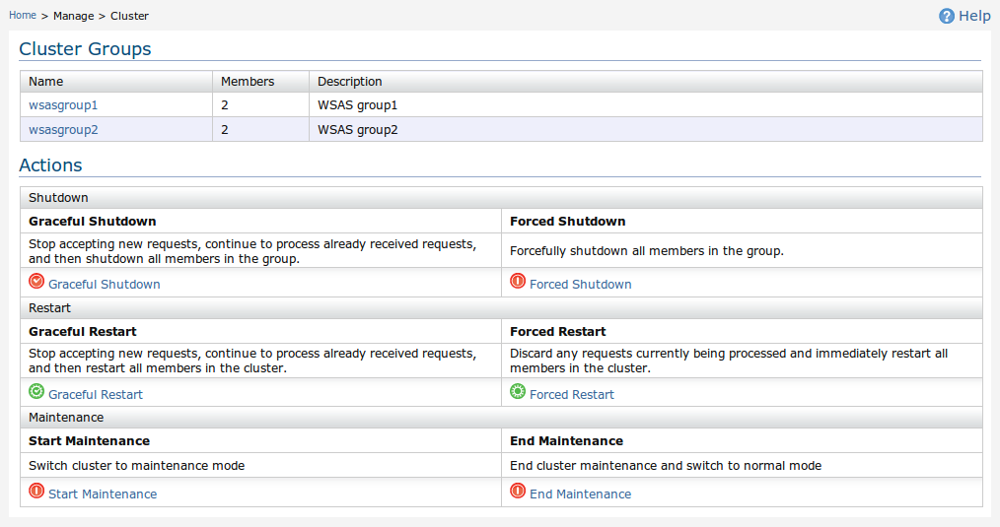
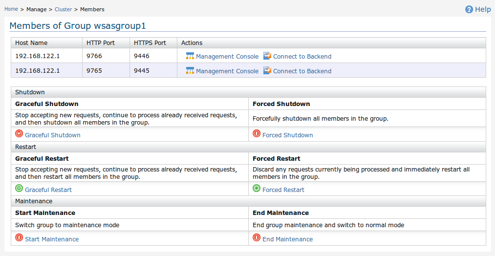

Any production deployment of a server has to fulfil two basic needs. They are high availability and scalability. High availability refers to the ability to serve client requests by tolerating failures. Scalability is the ability to serve a large number of clients sending a large number of requests without a degradation of the performance. Almost all successful server products support the above two features to some extent.
Another requirement that pops up naturally with the above two features is the ability to manage clustered deployments from a single point. There is no exception when it comes to Web services servers. Many large scale enterprises are adapting to Web services as the de facto middleware standard. These enterprises have to process millions of transactions per day, or even more. A large number of clients, both human and computers, connect simultaneously to these systems and initiate transactions. Therefore, the servers hosting the Web services for these enterprises have to support that level of performance and concurrency. In addition, almost all the transactions happening in such enterprise deployments are critical to the business of the organization. This imposes another requirement for production ready Web services servers. That is to maintain very low downtime.
It is impossible to support that level of scalability and high availability from a single server despite how powerful the server hardware or how efficient the server software. Web services clustering is needed to solve this, which allows to deploy and manage several instances of identical Web services across multiple Web services servers running on different server machines.
This cluster management component can be used to manage the entire Carbon cluster or individual cluster groups. You can perform the following operations on the entire cluster or on a selected cluster group.
In addition to that, you can access the management console of each host in a cluster group and manage that host.
Cluster Management user interface allows you to easily control the entire cluster or individual cluster groups.
Figure 1 shows the first page which will appear when you click on the Manage > Cluster menu item. This interface shows all existing cluster groups and you can perform the above mentioned operations such that it will afftect all listed cluster groups.
Figure 1 : Managing the entire cluster
You can move into the individual cluster group management user interface by clicking on the cluster group name.
Figure 2 shows the individual cluster group management user interface. It lists all hosts (nodes) in the cluster. You can perform the above mentioned operations such that it will afftect only for this particular cluster group.
Figure 2 : Managing a single cluster group
And also, you can use the "Management Console" link infront of each listed host to connect to the management console of that particular host. If that host doesn't have a management console (it only has a backend), "Connect to Backend" link can be used to connect to the backend of that host using the current Carbon UI.